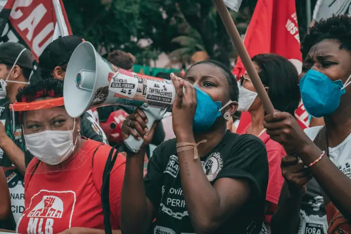

News
Why does Brazil get to speak first at UNGA? https://www. aljazeera.com/video/newsfeed/2 026/9/17/why-does-brazil-get-to-speak-first-at-unga?traffic_source=rss # aljazeera
Why does Brazil get speak first UNGA? https://www. aljazeera.com/video/newsfeed/2 026/9/17/why-does-brazil-get-to-speak-first-at-unga?traffic_source=rss
